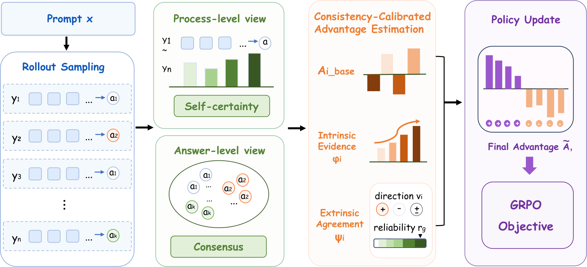

A model can solve the same question several ways. CCAE weighs each trajectory by the model’s self-certainty and uses agreement among its answers to calibrate the update. Training Qwen3-4B-Base on 7,500 unlabeled math problems yields 52.2% average Pass@1 across six reasoning benchmarks, five points above the strongest label-free baseline.
Two fallible signals from the same rollouts
Even without a reference answer, a model can measure how concentrated its token probabilities were during generation and count how often different trajectories reached the same answer. These observations describe confidence in the process and agreement on the outcome.
A familiar mistake can produce a confident trajectory. A shared misconception can also make many samples converge on the same error. CCAE addresses this at the advantage-estimation step of GRPO, where each sampled response needs a weight and a direction for the policy update.
Gate trajectories by confidence and calibrate them by agreement
For each trajectory, CCAE averages the KL divergence from a uniform vocabulary distribution to the model’s next-token distribution, then standardizes the result within the group to obtain z. It clusters equivalent answers and computes r from the largest cluster’s excess share over a uniform split. Balanced clusters give r close to zero. Unanimity gives r equal to one.
Only trajectories with z > 1 − r enter the update. A surviving trajectory gets weight z² multiplied by (1 − r) + rv, where v measures relative support for its answer cluster. When agreement is diffuse, only unusually confident trajectories pass. When agreement is concentrated, an answer with little support can receive negative advantage. The estimator reuses the rollouts already sampled for GRPO.

Results across six reasoning benchmarks
After training on MATH-Train, CCAE improves on the strongest label-free baseline by 5.0 points at 4B and 4.3 at 8B. Its mean scores are close to those of GRPO trained with reference answers.
On the harder DAPO-14k-MATH corpus, the final CCAE checkpoint scores 52.1%. All three label-free baselines deteriorate during training. The authors use gold labels to select each baseline’s best pre-collapse checkpoint. INTUITOR, the strongest of the three, scores 49.0%, a gap of 3.1 points. The larger 11.1-point gap is against EMPO at 41.0%.
| Training set / Qwen3-Base | Best label-free baseline | CCAE | Supervised GRPO |
|---|---|---|---|
| MATH-Train · 4B | 47.2 | 52.2 | 52.0 |
| MATH-Train · 8B | 50.3 | 54.6 | 54.3 |
| DAPO-14k-MATH · 4B | 49.0 | 52.1 | 54.1 |
When does agreement calibration matter?
Table 5 isolates the two decisions on DAPO-14k-MATH. Giving the vote full influence on every prompt by fixing r = 1 reduces the mean from 52.1% to 43.8%. Removing the intrinsic evidence factor in a separate ablation yields 40.0%. The two experiments test which trajectories receive an update and how strongly the vote influences them.
Free-form responses make answer equivalence harder to establish. In the Natural Reasoning experiment, final answers are grouped when they entail one another in both directions. With this protocol, Qwen3-4B-Base reaches 56.4% overall accuracy on MMLU-Pro, compared with 51.1% for the best label-free baseline. Transfer to a new task depends in part on whether equivalent answers can be grouped reliably.

Citation
BibTeX
@inproceedings{yang-etal-2026-consistency,
title = "Consistency-Calibrated Advantage Estimation for Label-Free Reinforcement Learning",
author = "Yang, Meng and
Zhao, Yongle and
Zhang, Zhiyang and
Jiang, Xiaorui and
Liang, Peirou and
Chen, Furui and
Xie, Yin and
Feng, Ziyong",
editor = "Lee, Hung-Yi and
Dev, Sunipa and
Li, Junyi Jessy and
Elliott, Desmond",
booktitle = "Proceedings of the 2026 Conference on Empirical Methods in Natural Language Processing",
month = oct,
year = "2026",
address = "Budapest, Hungary",
publisher = "Association for Computational Linguistics",
url = "https://aclanthology.org/2026.emnlp-main.2484/",
doi = "10.18653/2026.emnlp-main.2484",
pages = "56413--56425",
ISBN = "979-8-89176-459-0"
}